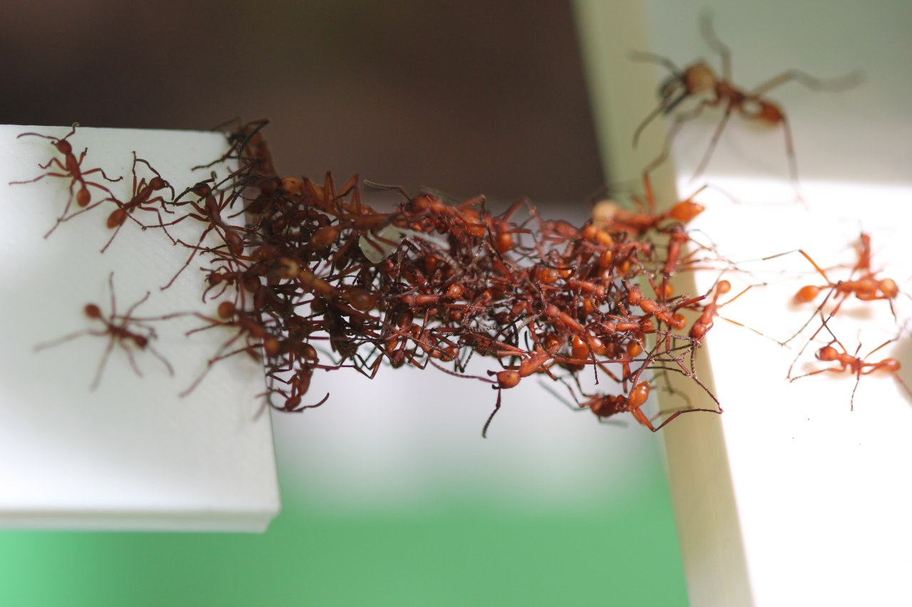
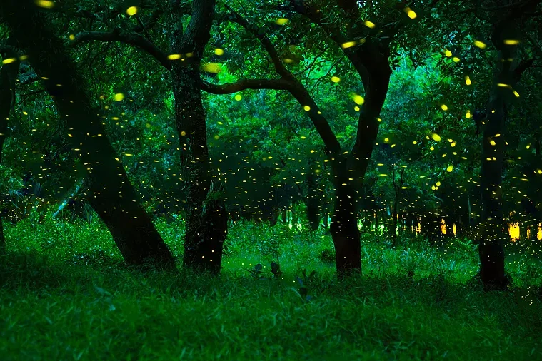

Ecosistemi coordinati
di robot programmabili

Gianluca Aguzzi, Martina Baiardi, Roberto Casadei, Angela Cortecchia,
Davide Domini, Nicolas Farabegoli, Danilo Pianini, Mirko Viroli
Davide Domini, Nicolas Farabegoli, Danilo Pianini, Mirko Viroli





Una piccola dimostrazione
Abbiamo un robot speciale chiamato leader, che guida gli altri, ottenendo un sistema auto-organizzante:
- Tutti i robot puntano verso la stessa direzione
- Tutti i robot puntano verso il leader
- I robot “danzano” in modo coordinato, raggiungendo la stessa direzione puntata dal leader
- Formazioni di semplici strutture: tutti i robot si dispongono in linea e in cerchio rispetto al leader.
Un nostro simulatore: MacroSwarm


Chi siamo?
 Gianluca Aguzzi - Post Doc
Gianluca Aguzzi - Post Doc Martina Baiardi - Dottoranda
Martina Baiardi - Dottoranda  Angela Cortecchia - Dottoranda
Angela Cortecchia - Dottoranda Davide Domini - Dottorando
Davide Domini - DottorandoCosa facciamo?
- Sistemi adattivi auto-organizzanti
- Intelligenza artificiale distribuita
- Ingegneria di sistemi distribuiti complessi
- Pervasive computing
- Esplorazione di nuovi paradigmi e linguaggi di programmazione
- Internet of Things
- Edge computing